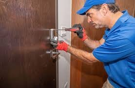
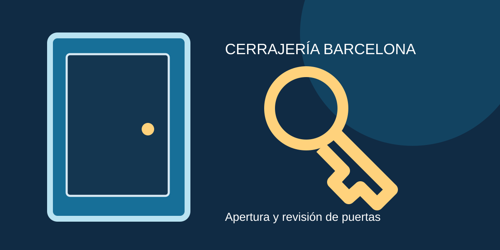

Cerrajero en L’Hospitalet de Llobregat | Barcelona

Al solicitar asistencia en L’Hospitalet de Llobregat, explica si se trata de una puerta cerrada de golpe, una llave rota, un bombín que gira en vacío o una cerradura que no acciona correctamente. Esta información ayuda a valorar las herramientas y los recambios que podrían necesitarse. Confirma por teléfono la cobertura de tu dirección y pide el desglose del desplazamiento, la mano de obra y los materiales antes de aceptar un presupuesto.

Una puerta que no gira, una llave que se atasca o un bombín antiguo pueden causar molestias tanto en viviendas como en locales. En L’Hospitalet de Llobregat, conviene valorar el estado de la instalación antes de sustituir piezas.
Servicios de cerrajería en L’Hospitalet de Llobregat
Para consultas sobre apertura de puertas, cambio de cerraduras y sustitución de bombines, indica el tipo de puerta y si la llave gira, entra o se ha roto. Con esos datos se puede orientar mejor la revisión y confirmar disponibilidad en L’Hospitalet de Llobregat.
Cómo elegir una solución adecuada
Si has perdido las llaves, cambiar el cilindro puede ser suficiente cuando la cerradura y el mecanismo están en buen estado. Si el resbalón no acciona, la puerta está desajustada o el cierre tiene holguras, puede ser necesario un diagnóstico más amplio. Para L’Hospitalet de Llobregat, recomendamos comparar compatibilidades, garantías y presupuesto total antes de elegir.
Urgencias y prevención en L’Hospitalet de Llobregat
Ante una puerta bloqueada, evita forzarla con tarjetas, destornilladores o herramientas improvisadas. Una intervención precipitada puede dañar el marco o el mecanismo. Explica por teléfono si se trata de una vivienda, un negocio o una comunidad de propietarios en el área metropolitana de Barcelona; pregunta por el coste de desplazamiento y el horario de atención.
Seguridad de viviendas y locales
Para reforzar accesos, considera cilindros de seguridad, escudos protectores y un buen ajuste de la hoja. Las necesidades de un portal comunitario pueden ser distintas a las de una puerta particular. Revisa también quién conserva copias de llaves y si existen cierres que conviene mantener o sustituir.
Consejos prácticos para L’Hospitalet de Llobregat
No uses lubricantes domésticos sin comprobar su compatibilidad con el mecanismo. No fuerces llaves dobladas; si notas resistencia recurrente, pide una revisión. Conserva facturas y documentación de las cerraduras instaladas, y comprueba que el trabajo incluya garantías claras.
Presupuesto y cobertura
El teléfono 647 785 208 permite consultar las condiciones del servicio para L’Hospitalet de Llobregat. La atención efectiva, tiempos de llegada, horarios y costes dependen de la disponibilidad real y deben confirmarse antes de contratar. No se presenta una sede física en este municipio.
Preguntas frecuentes
¿Cuánto cuesta abrir una puerta?
El precio depende del tipo de puerta, el horario, el desplazamiento y la complejidad. Solicita presupuesto antes de autorizar el trabajo.
¿Se puede abrir sin romper?
A veces sí, pero depende de la cerradura y del estado de la puerta. El profesional debe evaluar la situación.
¿Atendéis urgencias de madrugada?
Confirma la disponibilidad real y el coste de la intervención llamando al teléfono indicado.
¿Cuándo cambiar el bombín?
Es aconsejable revisarlo tras perder llaves, mudarte o detectar desgaste.
¿Trabajáis con Fichet?
Consulta por teléfono el modelo concreto y la disponibilidad de recambios compatibles.
¿Qué datos debo indicar al llamar?
Dirección aproximada, tipo de puerta, si está cerrada con llave y qué síntomas presenta.
¿Hay presupuesto previo?
Pide un desglose de desplazamiento, materiales, mano de obra e impuestos antes de confirmar.